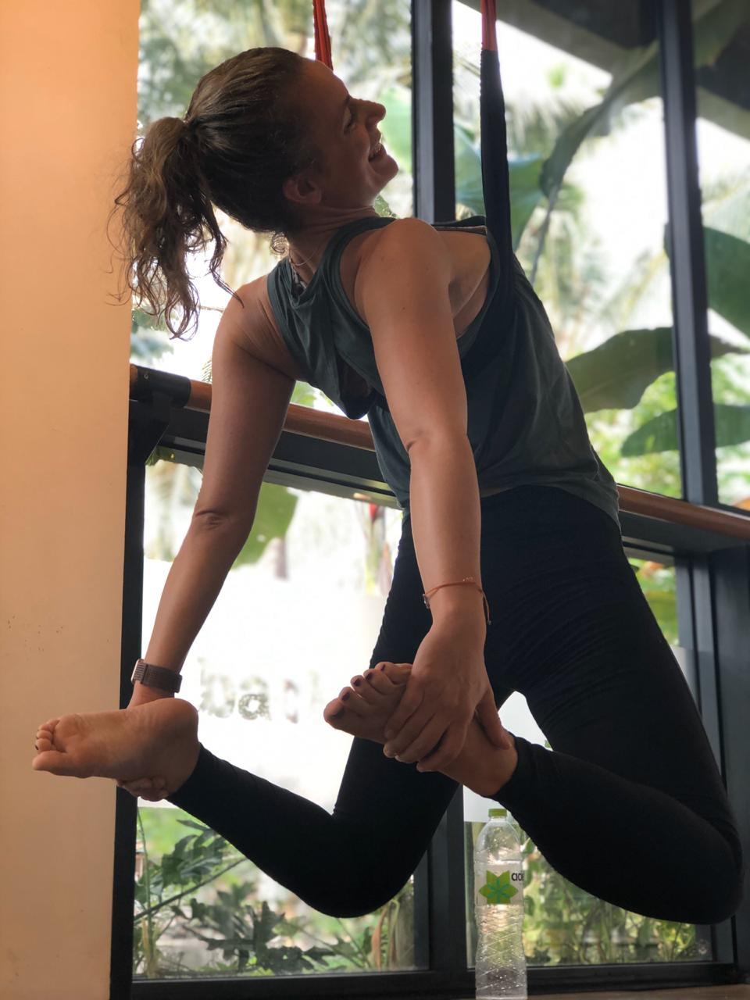
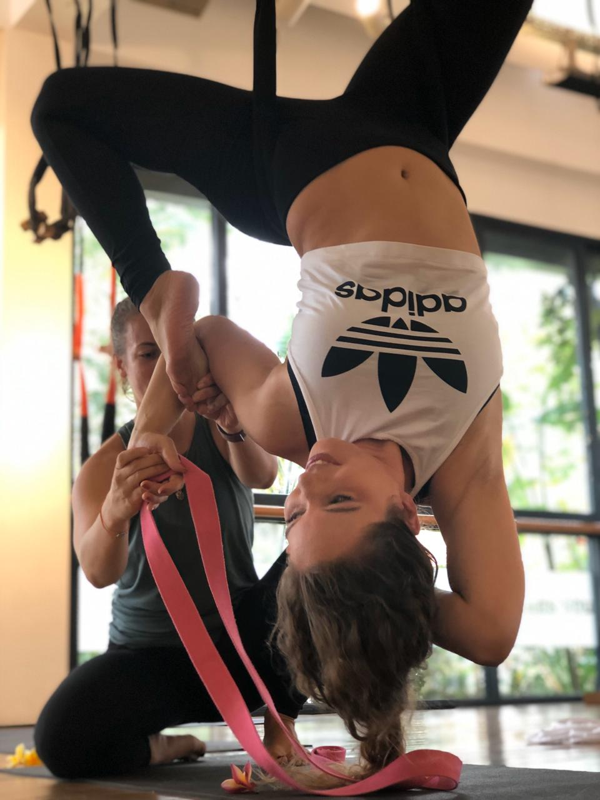

- Katja rocks
- Katja oms
- Katja elevates
Katja found her passion for yoga in 2013 while she was traveling Vietnam. Coming from the corporate world. Yoga was the perfect counterpart to her office job. Additionally she discovered her passion for coaching and teaching when she started to work as a mentor and business coach for startups. She loves to share her methodical knowledge and practical experience with others and enable them to achieve their goals.
In 2018 she decided to bring her passion for coaching and teaching to the next level and serve others to live a happier and healthier life. Therefor she explored various styles like Birkam, Vinyasa, Hatha, Yin, Kundalini and before she found her preferred style in Vinyasa, Yin and aerial yoga.
Finally, attending her first Teacher Training in 2018 in Fly High Yoga. Trained by the founder Jose L. Jimenez itself and joined his team of mentors afterwords. Fly High Yoga is based in the Iyengar tradition and has a strong focus on biomechanics and alignment. After her first training she started to teach regular classes in Berlin.
In 2019 Katja joined a 200h Teacher training in Vinyasa and Yin on Bali.
Katja teaches from a point of compassion with strong anatomy and biomechanics knowledge. She approaches her students in an authentic and supportive way. Starting where the students are to unlock their potentials. Her classes are approachable, fun and challenging and based on student needs. Always looking for new perspectives, always willing to learn, always a student.
Besides Yoga katja is trained as Health Coach. Because in her opinion movement is just one component to a healthy and balanced life. Mindfulness and Meditation to reduce stress, nutrition to feel balanced and pranayama to feel alive are also essential.
Offer
- Private Classes
- Regular Classes
- Corporate Yoga (Classes and Events)
- Yoga Events
- Workshops
- Mentoring/Coaching
Training
- 200h Vinyasa and Yin in 2019 on Bali
- 100h FlyHigh Yoga 2018/19
- 20h SUP Yoga Teacher Training in 2019
- Roll & Release (Myofascial Release)
- Holistic Health Coach
- First Aid and CPR
Impressions

